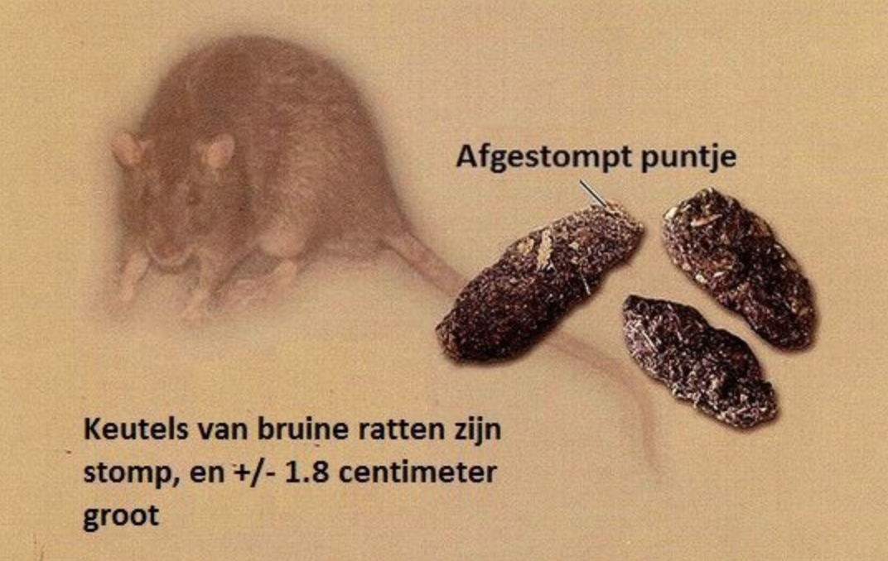

Rattenkeutels herkennen
Rattenkeutels zijn een duidelijk spoor om rattenoverlast te herkennen. Kijk vooral naar het formaat en het uiteinde.
Rattenkeutels (ca. 1,5–2 cm lang)

Bruine rat — stomp uiteinde: keutels van bruine ratten zijn ongeveer 1,8 cm groot en hebben een afgestompt puntje.

Maatvergelijking (1 cm schaal): duidelijk groter dan muizenkeutels (muizenkeutels zijn maar 3–6 mm, zo groot als hagelslag of een rijstkorrel).
- Lengte: ongeveer 1,5 tot 2 cm lang.
- Kleur en versheid: verse keutels zijn donker en glanzend/zacht; oudere keutels drogen op en worden grijzer en brokkelig.
- Waar vind je ze? Langs muren, plinten, schuttingen, bij afvalplekken, schuren en kruipruimtes.
Let op bij het opruimen: raak keutels, ratten of plekken met mogelijke rattenurine nooit met blote handen aan. Draag handschoenen, maak alles goed schoon en was daarna grondig je handen.
Wil je melden? Doe een officiële melding bij Spaarnelanden én zet je waarneming op de rattenkaart voor mede-Haarlemmers.